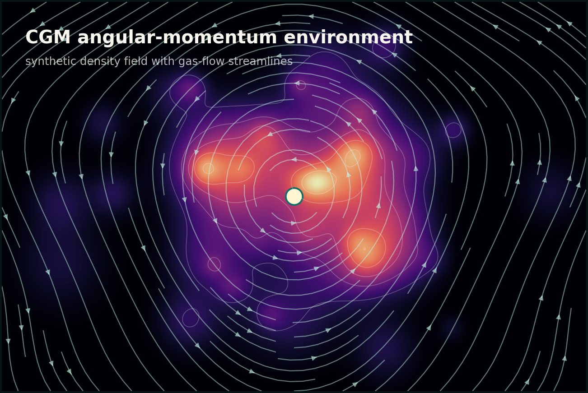
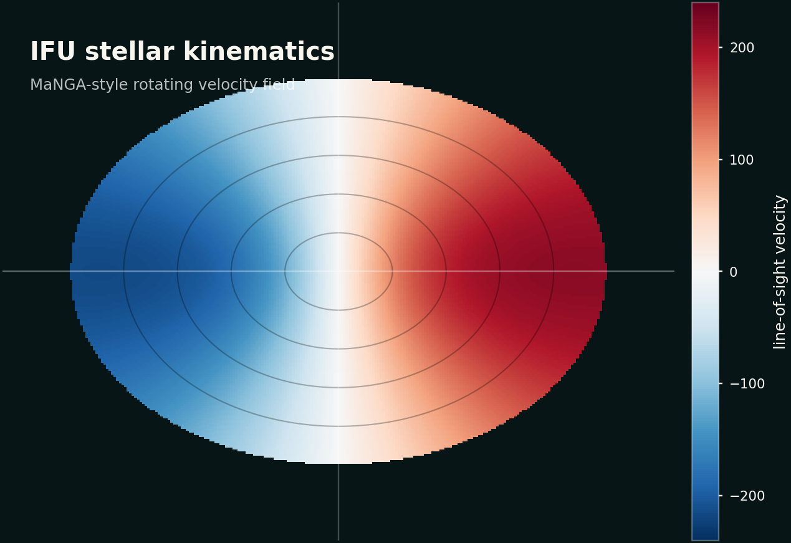

Submitted COLIBRE Luminosity Functions - II, modelling the ultraviolet luminosity function from z = 7 to z = 15.
Institute for Computational Cosmology, Durham University
Hi! I'm Shengdong.
I am a Postdoctoral Research Associate studying galaxy formation and evolution with cosmological simulations, semi-analytic models, and radiative-transfer forward modelling.
About Me

I am a Postdoctoral Research Associate at the Institute for Computational Cosmology, Durham University, and a member of the COLIBRE collaboration. My work connects theoretical predictions with observations by modelling how galaxies appear across wavelengths, redshift, and survey selection.
My current research focuses on the interpretation of JWST observations and the forward modelling of high-redshift galaxy populations using cosmological simulations, semi-analytic models, and dust radiative transfer.
Before joining Durham, I worked at Tsinghua University and completed my PhD at the National Astronomical Observatories, University of Chinese Academy of Sciences. My earlier work focused on galaxy dynamics, stellar populations, and integral-field spectroscopy.
Latest News
Submitted COLIBRE Luminosity Functions - I, covering far-UV to submillimetre luminosity functions at z = 0.
Presented at the 28th Guoshoujing Meeting on Galaxy Formation and Evolution in Haikou, China.
Presented at IAU Symposium #369, Massive Galaxies across the Universe, in Naples, Italy.
Curriculum Vitae
Current Position
Postdoctoral Research Associate
Institute for Computational Cosmology, Durham University
Previous Employment
Postdoctoral Researcher & Research Assistant
Tsinghua University
Education
PhD in Astrophysics
National Astronomical Observatories, University of Chinese Academy of Sciences
BSc in Astronomy
University of Science and Technology of China
Selected Service
Referee
MNRAS, A&A, and PASP
Organizer
Galactic Dynamics Workshop and astronomy journal-club discussions
Research
My research connects galaxy-formation theory to observations across three linked themes: high-redshift galaxy populations, environmental effects and quenching, and low-redshift galaxy dynamics from IFU surveys.

High-z Galaxy Formation
Predictions for JWST-era galaxy abundances and luminosity functions using GALFORM and COLIBRE.

Environment, CGM, Galaxy Quenching
Tsinghua-era work on environment, CGM angular momentum, disc heating, and the pathways to quenched galaxies in simulations.

MaNGA DynPop
Stellar dynamics, stellar populations, density profiles, dark matter fractions, and IMF variations from MaNGA integral-field spectroscopy.
Recent Publications
Publications are updated weekly from my NASA ADS public library. Full article titles are shown below.
First Author
Loading publication data from ADS...
Co-author
Loading publication data from ADS...
Group, Collaborations & Mentoring
Collaborations
- COLIBRE - luminosity functions and observable-space predictions.
- MaNGA DynPop - stellar dynamics, populations, and galaxy structure catalogues.
Mentoring
- Sen Wang, Tsinghua University - CGM angular momentum and galaxy star formation.
- Wenyu Zhong, Xiamen University - galaxy kinematics and dynamical classification.
Outreach & Teaching
Teaching
- Machine Learning Demonstrations for MISCADA, Durham University, 2025-2026.
- Tutorials on Foundations of Physics, Durham University, 2023-2025.
Recent Talks
- 28th Guoshoujing Meeting on Galaxy Formation and Evolution, Haikou, May 2026.
- SKIRT Days 2025, Ghent, Oct. 2025.
- IAU Symposium #369, Naples, June 2025.
- COLIBRE Collaboration Meeting, Leiden, Apr. 2025.
- Virgo Collaboration Meeting, Sussex, Jan. 2025.
Public Engagement
- The Schools' Science Festival, Durham University, Apr. 2026.
- Ukrainian Summer School, Aug. 2024.
Contact Me
Get in touch about research, collaboration, seminars, or data products.
Institute for Computational Cosmology
Durham University, Durham, DH1 3LE, UK
shengdong.lu@durham.ac.uk
ORCID: 0000-0002-6726-9499